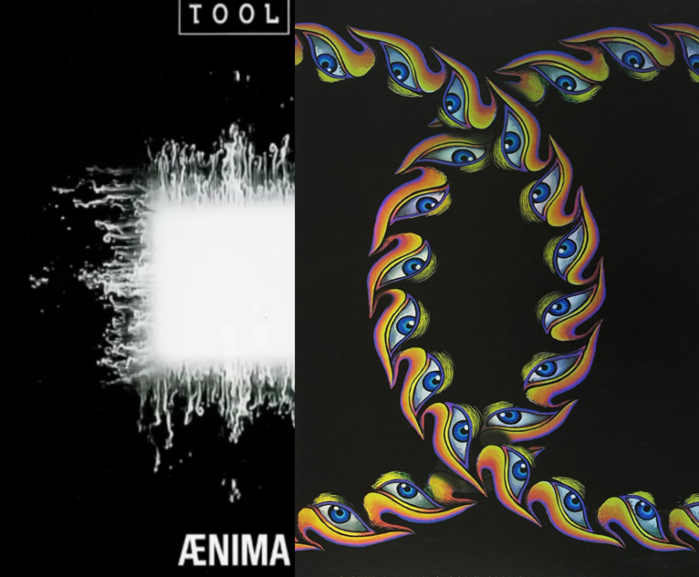

Music!
<-- Go Back!
1. The Wall
 Of course Pink Floyd's Master Piece is the first!
This album was my first TRUE experience with what music can be used for. What ideas it can help
show the listener, what feelings it can convey to them. The most well known Pink Floyd album
is 'The Dark Side of the Moon' which is no mistake, it is a fantastic album, but for me it
doesn't give the same over powering emotions and feelings 'The Wall' does. I was utterly obsessed
with the album the first time I heard it, and have listened to it more then anything else I own.
I, personally and whole heartedly, believe that there is no other piece of music like it, or as good as it
Pink Floyd's 'The Wall' deserves the title Masterpiece. Theres no other way I can describe it, and there
is no other album that has affected me more. Its something I'll show my children. Something I'll grow old
listening to. Something I'll be playing on my Death bed. The best of the best, so the only place it
deserves is number 1.
Of course Pink Floyd's Master Piece is the first!
This album was my first TRUE experience with what music can be used for. What ideas it can help
show the listener, what feelings it can convey to them. The most well known Pink Floyd album
is 'The Dark Side of the Moon' which is no mistake, it is a fantastic album, but for me it
doesn't give the same over powering emotions and feelings 'The Wall' does. I was utterly obsessed
with the album the first time I heard it, and have listened to it more then anything else I own.
I, personally and whole heartedly, believe that there is no other piece of music like it, or as good as it
Pink Floyd's 'The Wall' deserves the title Masterpiece. Theres no other way I can describe it, and there
is no other album that has affected me more. Its something I'll show my children. Something I'll grow old
listening to. Something I'll be playing on my Death bed. The best of the best, so the only place it
deserves is number 1.
2. Ænima/Lateralus
 I honestly didn't know
which to pick for this one. They are both just so equally good. I started with Ænima back in 2016. I bought the
CD totally oblivious to the sound of the music. I was awestruck the moment 'StinkFist' ended. It all felt
like one song, and the moment it was over I played it again, I can't honestly count how many times I've played
about that disc. The case certainly shows the wear and tare though. Lateralus was the second album from TOOL
that I listened too. And in it, they grabbed the bar they set with Ænima, and tore it off its foundation. That album,
for me set the standard of what music can be. It opened the flood gates sort of speak. Lateralus was even the fist song
I learned fully on the guitar. A utterly mind melting journey. So instead of wasting hours, days, months, years deciding
on which to pick, I chose them together. Both equally amazing pieces of art!